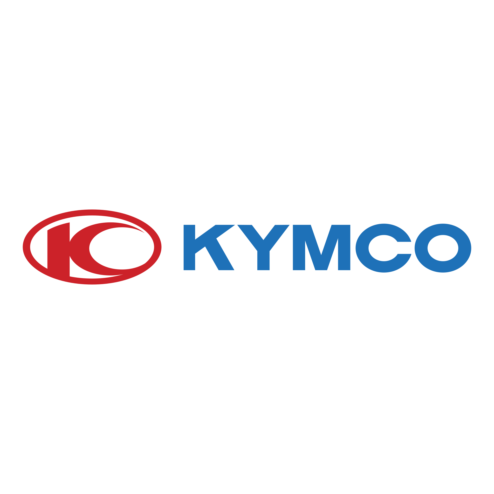

Autoryzacje
Firmy, z którymi
Firmy, z którymi
współpracujemy
Jesteśmy oficjalnym autoryzowanym dealerem i serwisem trzech wiodących marek motocyklowych. Gwarantujemy oryginalne części i profesjonalny serwis.
Autoryzowany Dealer & Serwis
Jesteśmy autoryzowanym salonem i centrum serwisowym marki Kawasaki w Opolu. Pełna gama motocykli – od sportowych Ninja po turystyczne Versys.
- Sprzedaż nowych motocykli Kawasaki
- Autoryzowany serwis gwarancyjny i pogwarancyjny
- Oryginalne części i akcesoria
- Diagnostyka komputerowa
Autoryzowany Dealer & Serwis
Włoska marka o 100-letniej tradycji. Nowoczesne motocykle łączące europejski design z niezawodną technologią. Salon Benelli w Polsce.
- Sprzedaż nowych motocykli Benelli
- Autoryzowany serwis Benelli
- Oryginalne części importowane
- Wsparcie techniczne
⭐ Polecana

Autoryzowany Dealer & Serwis
Tajwański producent o światowej renomie. Skutery i quady Kymco – idealne dla miasta i terenu. Szeroki wybór modeli.
- Skutery 50 ccm i 125 ccm
- Maxiskutery
- Quady Kymco
- Autoryzowany serwis